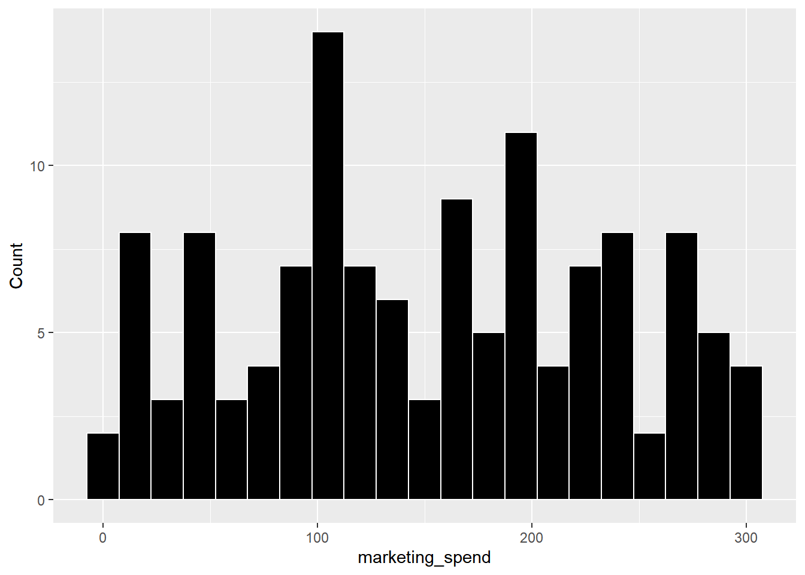
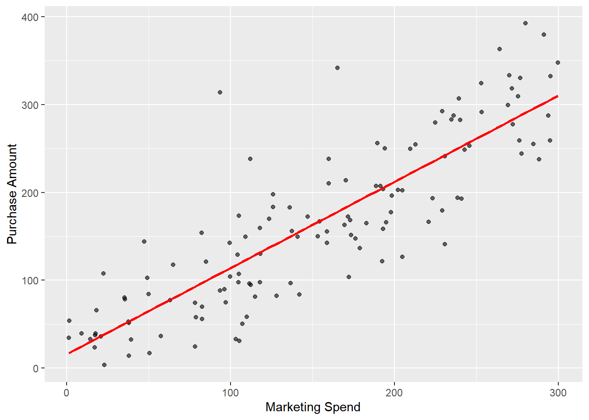
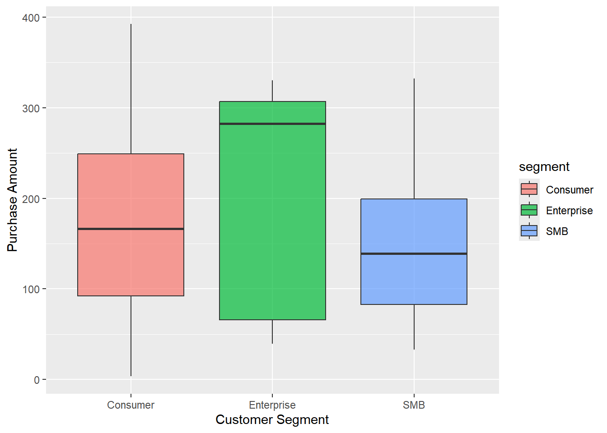

The Impact of Personalized Marketing Spend on Customer Purchase Amount
Introduction
This report analyzes the relationship between marketing expenditures and customer purchase behavior in the previous quarter’s personalized campaign. Firms often allocate budget to ads, emails, and coupons to drive sales, but the effectiveness of increased spending remains unclear. Understanding whether higher spending translates to higher purchases can optimize future marketing investments. This analysis uses data to provide data-driven insights for budget decisions.
Research Question
Does higher per-customer marketing spending lead to higher individual purchase amounts? We specifically examine whether increased investment in personalized marketing directly correlates with higher customer purchase values across different customer segments.
Dataset Introduction
The dataset contains customer-level records including marketing spend, purchase amount, customer segment, and other campaign details. The cleaning process removed missing values and invalid non-positive records to ensure reliable analysis. Only complete and valid observations are used.
Dataset Description
The cleaned dataset contains 128observations and 4 variables. Variable types include character (customer_id, segment) and numeric (marketing_spend, purchase_amount), which support the analysis of marketing spend and purchase behavior.
The marketing expenditure ranges from 0 to 300 and is relatively evenly distributed. This suggests that the marketing campaign covers a wide range of spending levels, which helps ensure a more comprehensive analysis of the relationship between marketing investment and revenue.
| marketing_spend | purchase_amount | |
|---|---|---|
| Min. : 1.36 | Min. : 3.28 | |
| 1st Qu.: 93.64 | 1st Qu.: 84.11 | |
| Median :153.84 | Median :157.28 | |
| Mean :152.05 | Mean :164.98 | |
| 3rd Qu.:223.83 | 3rd Qu.:241.81 | |
| Max. :299.85 | Max. :392.49 |
This table shows descriptive statistics for marketing_spend and purchase_amount, which helps understand the central tendency and spread of the two key variables. # Results section The research question asks whether higher marketing spending leads to higher purchase amounts. To answer this, two figures are created to visualize the relationship between the key variables.

Figure 1 shows a clear positive linear relationship between marketing spend and purchase amount. As marketing spend increases, purchase amount tends to increase as well. The linear regression line confirms the upward trend.

Figure 2 shows the distribution of purchase amounts across the three customer segments: Consumer, Enterprise, and SMB. Enterprise customers have the highest median purchase amount, reaching approximately 280, and the widest range of purchase values, with the largest box and extending to nearly 340. In contrast, Consumer and SMB customers have lower and more similar median purchase amounts, around 160 and 140 respectively, with narrower value ranges. This indicates that while the overall positive correlation between marketing spend and purchase amount holds for all groups, Enterprise customers drive the highest purchase volumes and show the greatest variability in spending behavior.
In summary, the visualizations clearly demonstrate a strong positive relationship between marketing spend and purchase amount. As shown in Figure 1, increased marketing spending is consistently associated with higher purchase amounts, confirming a clear upward trend. Figure 2 further reveals that Enterprise customers generate the highest purchase values, while Consumer and SMB customers show more stable spending patterns. The average marketing spend for all customers is 152.05, and the average purchase amount is 164.98. Together, these findings directly answer the research question by providing strong evidence that higher marketing spending leads to higher purchase amounts.